Site oficial da Aviator Games
Jogue o jogo Aviator por dinheiro online
Aviator aposta é um jogo online que oferece a oportunidade de obter lucros significativos, aumentando os ganhos de acordo com as probabilidades, que podem chegar a x100. Assim, apostando apenas 1 dólar, é possível ganhar até 1.000 dólares de forma rápida.
Aviator game é uma nova forma de entretenimento popular que se destaca na indústria de jogos de azar nos últimos anos. Com Aviator, é possível ganhar grandes quantias de dinheiro em questão de segundos, graças a um sistema justo e confiável, que garante um jogo honesto e equitativo.
No entanto, é importante lembrar que, se a aposta não for sacada antes do término da partida, ou seja, se o jogador não fizer cash out antes do avião voar para longe, dita aposta será considerada perdida. Aviator online é um jogo que envolve adrenalina, diversão e grandes vitórias!
Em 2020, o jogo Aviator foi considerado um dos mais populares pelos cassinos online 1win Aviator, Aviator Pin Up e Spribe Aviator 1xbet.
Saiba do que se trata o jogo Aviator
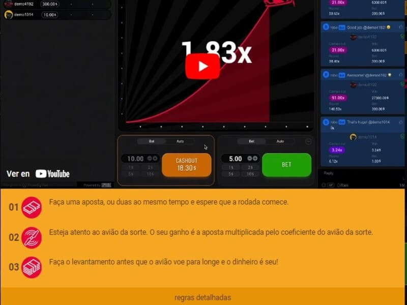O Aviator game proporciona uma experiência onde o jogador acompanha a decolagem do avião e seus lucros estão diretamente relacionados à altitude alcançada por ele. Nesse sentido, a altura atingida equivale ao multiplicador que será aplicado sobre a sua aposta inicial ao retirar o valor a tempo, antes do avião desaparecer, garantindo sua vitória.
É importante não exceder os limites e conseguir retirar sua aposta no momento adequado. Em outras palavras, é preciso clicar no botão de cash out antes que o avião pare de subir ou desapareça, pois o multiplicador não aumentará mais.
Caso o avião voe para longe antes de você resgatar a aposta, seus fundos serão perdidos, porém, se o multiplicado atingir 2x ou 3x for, o sucesso será garantido ao máximo!
Dados importantes sobre Aviator
Características do jogo Aviator
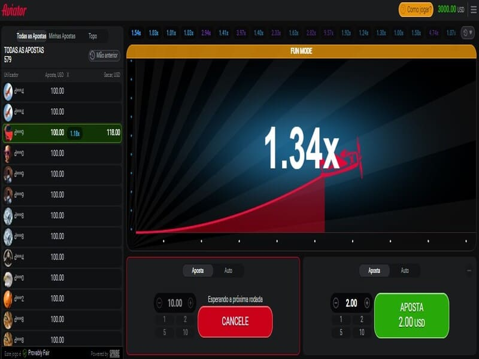Você encontrará diferentes características de tipo de jogo no Aviator.
Embora aparentemente simples, o jogo online Aviator foidesenvolvido para que os jogadores não fiquem entediados. O jogo oferece diversas funcionalidades criadas para tornar a experiência emocionante, interessante e agradável. Por exemplo:
Ao participar do jogo Aviator, é possível realizar apostas simples ou duplas. No caso de escolher apostas duplas, o participante deve clicar duas vezes no botão de Retirada. Com isso, é possível se resguardar de possíveis perdas e aumentar as chances de obter lucros mais elevados.
O apostador tem a opção de selecionar um modo de jogo conveniente - interromper manualmente cada rodada pressionando o botão Retirar ou programando uma retirada automática em um determinado valor de coeficiente. Por exemplo, definindo o valor de 1,5, o jogo será pausado automaticamente. Se o coeficiente ultrapassar o valor de 1,5, a sorte estará ao seu lado, mas se o jogo for interrompido em 1,5, você perderá a aposta.
O Aviator é um jogo que permite múltiplos jogadores. Todos os usuários cadastrados podem interagir por meio do chat integrado ao jogo. Entretanto, é fundamental manter o foco durante a conversa para não comprometer o desempenho no jogo.
No Aviator, é possível visualizar não apenas o registro dos seus lucros, mas também os ganhos de outros participantes em jogadas passadas. Essa funcionalidade se apresenta como um excelente indicador para avaliar as estratégias aplicadas pelos demais jogadores.
Parâmetros do Jogo Aviator
| 🕹Fornecedor | Aviator Spribe |
| 🎮Tipo de Jogo | Jogo de explosao/ Aviao/ Choque |
| 🖥Ano de lançamento | 2019 |
| 💵Valor mínimo de Aposta | Desde R$0,50 |
| 💵Valor máximo de Aposta | Até R$500 |
| 📈RTP (Porcentagem de Retorno ao Jogador) | 97% |
| 🚀Tipos de Aposta e Cashout | Multiplayer — Cashout e apostas Automáticas |
| ⌚Tempo promédio de jogada por rodada | 30 segundos |
Como baixar Aviator
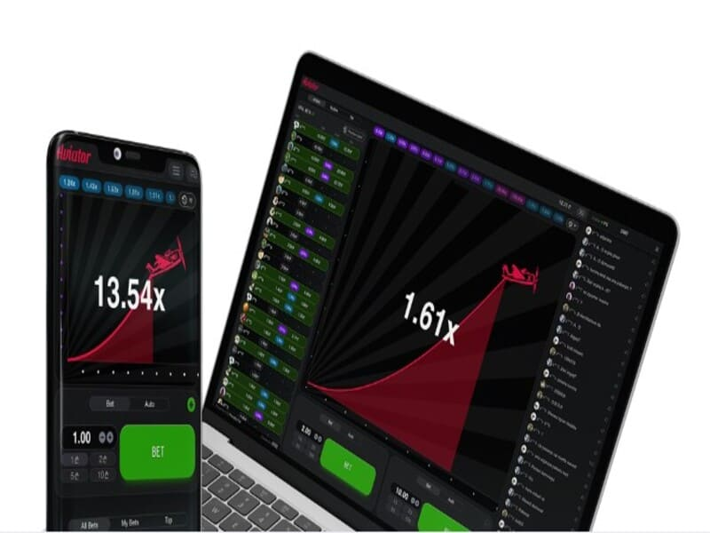Jogar no seu celular é muito prático e muitos jogadores que estão descobrindo o mundo fascinante dos jogos online estão se perguntando como fazer o download do seu jogo favorito, como o Aviator, em seus smartphones. O desenvolvedor Spribe garantiu que o jogo possa ser usado confortavelmente em todos os dispositivos, como smartphones, tablets ou PCs, mas não é possível baixar o jogo de caça-níqueis no seu celular: ele não está disponível em lojas de aplicativos, como a App Store ou Play Market.
Entretanto, você pode baixar o aplicativo de algumas casas de apostas e jogar Aviator, ou pode usar a versão mobile das mesmas desde qualquer dispositivo moderno com acesso à internet.
Posso confiar no jogo Aviator
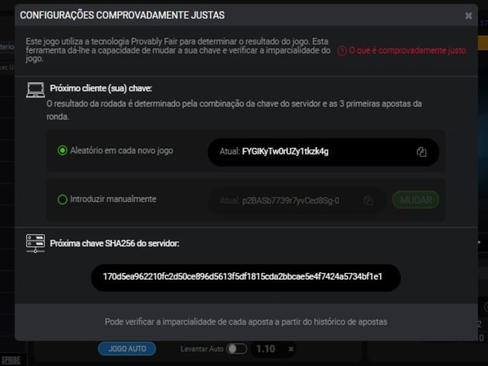Os jogos do Aviator, desenvolvidos pela confiável Spribe, são baseados em uma tecnologia criptográfica chamada "Provably Fair". Essa tecnologia garante 100% de justiça no resultado do jogo. Com essa tecnologia, terceiros não podem interferir no processo nem algoritmo do jogo.
A produção de cada jogada não é realizada em nossos servidores. Ela é produzida com a colaboração de jogadores e é completamente clara. Por isso, é inviável que alguém altere o resultado do jogo. Além disso, qualquer indivíduo pode examinar e validar a justiça do jogo.
O operador está gerando a semente do servidor (16 símbolos aleatórios). A versão com hash desta semente de servidor está disponível publicamente antes do início da rodada.
A semente do cliente é gerada no lado de cada jogador e quando a rodada começa, combinamos a semente do servidor com as sementes do cliente e geramos o hash de semente SHA512.
Os resultados da rodada são gerados a partir do hash SHA512. Cada jogo tem uma matemática ligeiramente diferente para gerar resultados, para atender aos requisitos do jogo.
|
A versão hash da semente do servidor das próximas rodadas está disponível publicamente na janela de configuração (no menu do usuário, marque 'Configuração provavelmente justa' e depois 'Próxima semente do servidor SHA256'). |
|
Você também pode alterar a semente do seu cliente aqui. |
|
A imparcialidade de cada rodada do jogo pode ser checada e verificada. |
|
Em cada jogo, encontre o histórico do jogo e clique no ícone "probably fair". |
|
Em cada jogo, encontre o histórico do jogo e clique no ícone "probably fair". |
Algoritmo do jogo Aviator
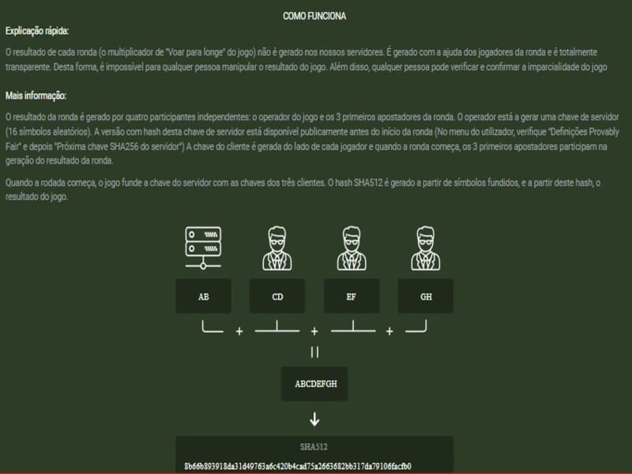O algoritmo do Aviator é bastante simples. Em cada rodada, o jogador efetua uma Aviator aposta. A multiplicação é realizada por um programa de algoritmos aleatório. Em um momento aleatório, o coeficiente de crescimento para e as apostas dos jogadores não resgatadas(cash out) são perdidas.
É importante lembrar que a tecnologia Provably FAIR garante 100% de honestidade e resultados não manipulados no jogo Aviator cassino online. De forma mais minuciosa, o resultado de cada rodada (o coeficiente de voo do avião) não é gerado pelos servidores do cassino online, mas sim com a ajuda dos jogadores que participam da rodada. Isso torna o jogo totalmente transparente e acessível a todos para verificar e confirmar a sua justiça. Para garantir a honestidade, é fundamental escolher apenas um cassino online confiável para jogar Aviator!
Diferentes métodos para jogar Aviator:
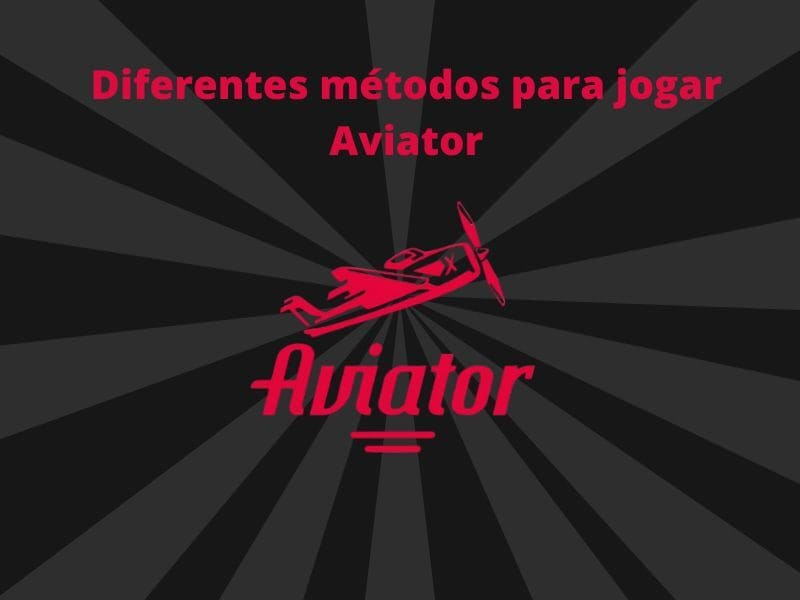Aposta e CashOut Aviator
Autoplay e AutoCashout Aviator
Como jogar o jogo Aviator?
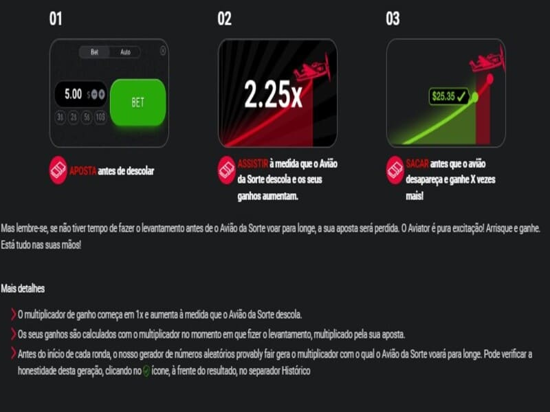Os jogadores têm a oportunidade de fazer no slot Aviator aposta por rodada em uma ampla gama de valores. até 0,5 a 2.800 reais brasileiros. O multiplicador Aviator é gerado aleatoriamente para cada jogo. O funcionamento do slot de jogo Aviator é baseado na operação de um gerador de números aleatórios. A animação começa quando os jogadores fazem suas apostas, que são fixadas quando o avião começa a decolar.
Quanto mais tempo o plano de pixels em Aviator sobe, mais alto o multiplicador se eleva. A qualquer momento o jogador em Aviator aposta pode decidir retirar-se com um único clique antes que ele caia. O objetivo do jogo é decolar em Aviator aposta o mais tarde possível, evitando ao mesmo tempo um acidente.
Estratégias de jogo Aviator
Existem diferentes estratégias que podem ser usadas durante as rodadas do jogo Aviator.
Para escolher a tática mais adequada para o jogo, é possível utilizar o modo de demonstração do slot, porém lembramos que nem todos os cassinos têm essa opção disponível.
Atualmente, as estratégias mais utilizadas pelos jogadores são:
Embora essas estratégias possam aumentar a probabilidade de vencer, elas não garantem a vitória.
A ideia por trás da estratégia é fazer um cashout quando a aposta é alta e o multiplicador não está subindo. Quando a aposta é baixa, o jogador pode esperar pelo aumento do multiplicador.
A aplicação da estratégia de pode ser arriscada se o jogador tiver uma quantia pequena de dinheiro na conta do jogo. Essa estratégia envolve duplicar constantemente a aposta após cada derrota até ganhar uma rodada.
Aposta de pequenos e grandes valores: essa estratégia consiste em começar suas apostas com pequenos valores e logo aumentá-los, e caso o jogador veja que tem muitas perdas constantes, para de jogar durante aproximadamente 1 hora e após esse período aumentar o valor da sua aposta.
Onde Jogar Aviator
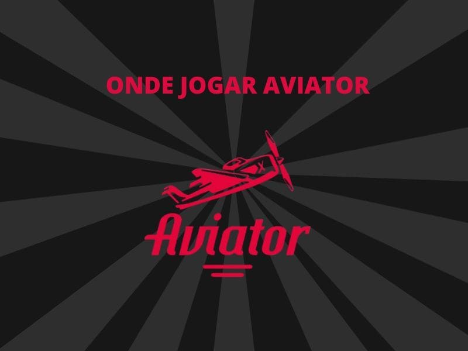O jogo Aviator está disponível em diferentes cassinos na Internet, mas aconselhamos que você jogue apenas em casas de apostas que tenham licença com bons comentários, tanto sobre a funcionalidade do jogo como sobre depósitos e saques completados corretamente.
Compartilharemos em nosso site a lista de sites confiáveis testados por nós onde você pode jogar o Aviator game.
Lembramos que nossa opinião sobre os cassinos, não garantem vitórias para todos os jogadores, recomendamos sempre, jogar de maneira responsável.
Jogar Aviator na casa de apostas Pin-Up
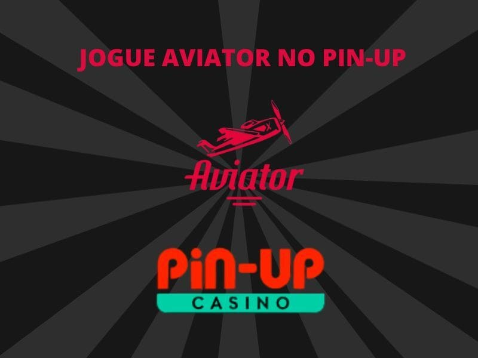Graças ao número de pessoas que começaram a jogar Aviator, o jogo de explosão ficou popular entre jogadores de diferentes idades e pode ser encontrado no cassino Pin-Up.
O Pin-Up é um cassino online seguro que oferece jogar Aviator online no modo de demonstração, além de oferecer diferentes tipos de bonificações para jogadores novos e antigos.
Usando o modo de demonstração no cassino online Pin-Up você pode testar o jogo, conhecer como funciona o algoritmo e só depois começar a apostar com dinheiro real.
Para se cadastrar no Aviator Pinup:
Vantagens de jogar Aviator no Pin-Up Casino:
Jogar na casa de apostas 1win Aviator
.jpg)
Se você gosta de códigos promocionais para aproveitar melhoras suas jogadas, com certeza você gostará do cassino 1win, que está em alta entre brasileiros. Você já reparou que muitos influenciadores dispõem de um código promocional 1win em seus stories do Instagram?
Para se cadastrar no Aviator 1win:
Aproveite a confiabilidade do site 1win e bonificacoes para aproveitar mais ainda o jogo do Aviator!
Vantagens de jogar Aviator na 1win:
Jogar Aviator na casa de apostas 1xbet

1xBet se transformou em uma das casas de apostas mais notáveis entre o público brasileiro.
E agora, o jogo Aviator, que já causou um grande impacto na indústria do cassino, também está disponível para ser jogado no 1xBet Aviator. Uma grande vantagem de jogar Aviator 1xbet é que a casa de apostas tem seu próprio aplicativo, que pode ser baixado tanto no iOS quanto no Android.
Para se cadastrar no Aviator 1xbet:
Além disso, a 1xBet está oferecendo uma ótima bonificação para novos jogadores. Quem se cadastrar em breve poderá receber um incentivo de até 1.200 BRL.
Vantagens de jogar Aviator na 1xbet:
Jogar na casa de apostas Aviator Parimatch
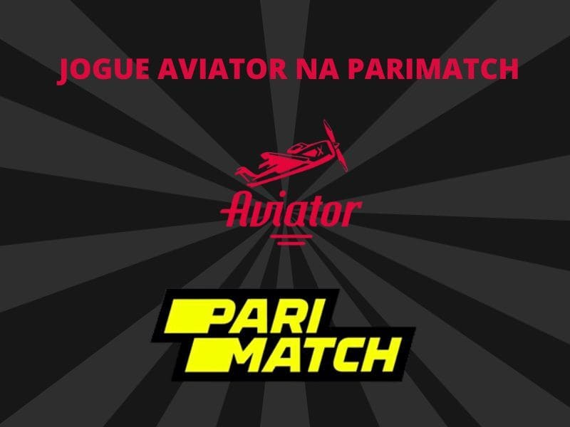Aproveite a oportunidade de ganhar jogando Aviator game na cada de apostas Parimatch. A casa de apostas oferece bônus de cadastro para seus novos usurários e bônus de fidelidade para usuários antigos, além de disponibilizar o modo de demonstração mesmo se você ainda não estiver cadastrado no site.
Para se cadastrar no Aviator Parimatch:
Vantagens de jogar Aviator na Parimatch:
Jogar na casa de apostas Aviator Blaze
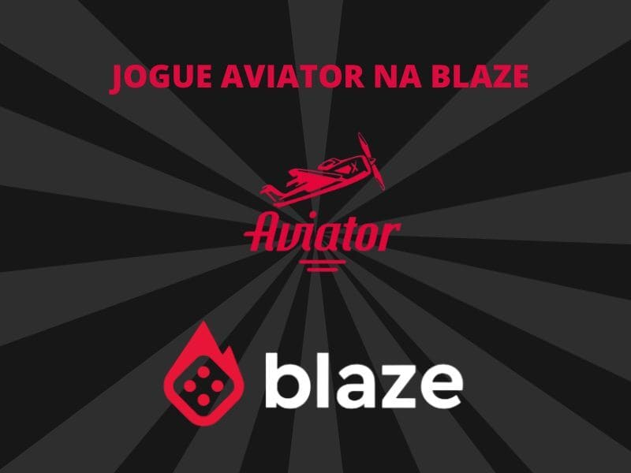Se você prefere um cassino reconhecido e seguro, recomendamos experimentar a casa de apostas Blaze. Hoje em dia a Blaze é a casa de apostas mais promovidas por influencers e até o Neymar e isso já diz muito a respeito sobre a seriedade da casa de apostas.
Os jogadores da Blaze também terão acesso a bônus de Boas-vindas e rodadas grátis em alguns slots.
Para se cadastrar no Aviator Blaze:
Vantagens de jogar Aviator na Blaze:
Jogos similares ao Aviator
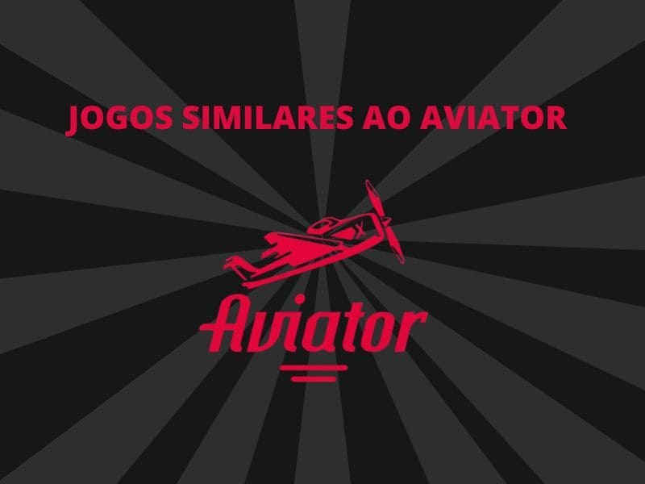Muitos preferem a simplicidade dos jogos de explosão ou choque, já que é um tipo de jogo fácil de entender e os jogadores somente precisam escolher um valor de aposta, se fará a mesma de maneira manual ou automática e assistir ao jogo, é por isso que muitas pessoas consideram o Aviator um jogo viciante.
Afinal, quem não gosta de receber dinheiro enquanto assiste um avião decolar? Mas se você já se cansou de ver os gráficos de sempre no jogo Aviator, existem outros jogos similares que podem ser jogados com o mesmo estilo.
Jogos parecidos ao Aviator:

O jogo JetX é um jogo bastante similar ao Aviator que possui comandos simples, porém consegue entreter seus jogadores com sua interface colorida.
O jogo de impacto JetX começa com uma imagem de uma pista com um pequeno avião sobre ela. O avião começará a decolar depois do jogador ter feito sua aposta e o objetivo principal é prever em que altura (multiplicador) o avião irá parar na pista. Ao iniciar o jogo, é recomendado escolher o valor da aposta em uma ou duas jogadas. É possível jogar o JetX simultaneamente com apostas múltiplas.
O slot é baseado em um mecanismo de impacto. Quando o avião atinge a altitude correta, ele explode. Dessa forma, o jogador precisa prever com precisão o ponto de multiplicação máxima para a rodada e fazer cashout no momento correto.
Embarque em um modernovoo ao jogar JetX. Tudo que você precisa é escolher o valor da sua aposta e se preparar para essa missão multiplicadora.
As probabilidades de vitória começam em 1x e crescem cada vez mais enquanto Lucky Joe sobe.
O valor ganho é igual ao coeficiente no momento em que o jogador fez uma retirada multiplicado pelo valor de sua aposta.
Antes de iniciar a rodada, o gerador do jogo gera imparcialmente números aleatórios do coeficiente no qual Lucky Joe voa. A qualquer momento, a honestidade do cálculo do coeficiente para uma rodada específica pode ser verificada clicando no botão na janela do histórico.
O jogo Zeppelin segue o estilo de jogos explosão, que é uma modalidade cada vez mais popular entre jogadores. No jogo tipo crash, o jogador realiza sua aposta antes do dirigível começar a subir.
A aposta deve ser encerrada antes do "colapso", representado neste caso por um Zeppelin. O jogo pode ser jogado com vários outros apostadores, as salas geralmente são públicas e os apostadores podem conversar entre si.
Embora possa parecer simples, o retorno é maior dependendo do tempo que você consegue segurar a aposta antes do colapso.

Space XY é um jogo da BGaming, onde os participantes observam o lançamento de um foguete e tentam prever a hora de sua explosão. Quanto mais tempo a nave permanecer em órbita, maiores serão os pontos ou a quantia em dinheiro a serem obtidos Space XY é um jogo singular, com normas particulares e sem linhas de pagamento.
O conceito primordial do jogo Space XY é uma aventura imaginária no espaço. Uma nave animada percorre o universo, atravessando planetas e estrelas.
O Rocket X é um jogo com um gráfico bastante diferente e divertido, multiplayer, onde somente o jogador escolhe quando concluir a partida.
Essas escolhas possibilitam que você fique satisfeito com lucros modestos ou se dedique para conquistar o prêmio principal.
Os jogadores e fãs de jogo tipo crash, adoraram experimentar sensações fascinantes ao jogar Rocket X.
Temos certeza que os jogadores mais velhos, gostaram de jogar o jogo tipo crash ThunderCrash ao ser bem similar aos antigos jogos de video-game.
Neste jogo, você também deverá decidir o valor a ser apostado e o momento correto de retirar sua aposta quando o multiplicador atingir um valor considerado pelos jogadores, porém antes que exploda.
Existem também as opções de Aposta e Retirada automática. Se ele atingir o valor do Auto Retirada antes do foguete explodir, você ganha; caso contrário, você perde sua aposta.
Vire um astronauta e aumente sua banca!O Spaceman é um jogo temático da categoria Crash. Os jogadores receberam um valor multiplicado da aposta, dependendo do momento em que retirarem suas apostas.
No jogo SpaceMané possível efetuar um resgate de metade da sua aposta. Isso significa que uma porção do valor apostado pode ser retirada e ainda assim permanecer no jogo. Utilizando a funcionalidade de resgate automático de 50%, é viável estabelecer um multiplicador para efetuar o resgate durante a partida.
Ao contrário de outros jogos, o Cash or Crash é um jogo de apostas ao vivo com um prêmio progressivo. Isso significa que quanto mais você investe, mais dinheiro pode ganhar.
A mecânica do jogo é a seguinte: bolas vermelhas e verdes são sorteadas. Se uma bola verde for sorteada, você ganha e sobe de nível, já, se uma bola vermelha for sorteada, você perde a aposta. O objetivo do jogo é subir o mais alto possível para continuar aumetando seu lucro.
Para aqueles que preferem usar a opção de jogar automaticamente, o jogo oferece essa funcionalidade para tornar as coisas mais fáceis. Para usar essa opção, basta inserir o número de vezes que deseja jogar e o valor da aposta.
O jogo Crash é um jogo para mutiplayer e suas partidas iniciam automaticamente. É importante que os jogadores estejam atentos à seta ascendente e busquem a oportunidade de aumentar as apostas pelo maior multiplicador possível e retirar seus ganhos a tempo.
O multiplicador inicial de uma curva é x1 e aumenta conforme a flecha sobre. Caso o jogador clique antes do momento certo, pode-se obter o mínimo e perder o jackpot. Se não houver tempo para pressionar a tecla, é possível perder a chance. Esse dilema é o que torna o slot Crash tão intrigante e popular.
Tabela de comparação entre o jogo Aviator e outros Jogos Crash:
|
Jogo |
Fornecedor |
Mutiplayer |
RTP |
Máximo Mutiplicador |
Aposta Min. |
Aposta Max. |
|
Aviator |
Spribe |
Sim |
97% |
até 100x |
R$0,50 |
R$500 |
|
JetX |
Smartsoft Gaming |
Sim |
96% |
Desconhecido |
R$ 0,50 |
R$ 3,000 |
|
Lucky Jet |
Gaming Corps |
Sim |
97% |
até 100x |
R$1,00 |
R$600 |
|
Zeppelin |
Yggdrasil Gaming |
Sim |
97% |
até 900x |
R$1,00 |
R$1,000 |
|
Space XY |
Bgaming |
Sim |
97% |
até 10.000x |
R$0,10 |
R$1,000 |
|
Rocket X |
Turbogames |
Sim |
97% |
Desconhecido |
R$0,10 |
R$600 |
|
ThunderCrash |
Ignition Casino |
Sim |
96% |
Desconhecido |
R$1,00 |
R$5,000 |
|
SpaceMan |
Pragmatic Play |
Sim |
96% |
até 5.000x |
R$1,00 |
R$1,00 |
|
Cash or Crash |
Evolution |
Não |
99% |
até 50.000x |
R$ 0.10 |
R$ 1.00 |
|
Crash |
Turbo Games |
Sim |
97% |
Desconhecido |
R$0,50 |
R$500 |
Mais informações sobre jogos de cassino com dinheiro real ou de graça podem ser encontradas em https://playcasino.games/pt/
Prós e contras do jogo Aviator
Em geral, o Aviator game é um jogo que tem agradado ao público de diferentes idades, pela simplicidade, entretenimento, baixo custo de apostas e lucros significantes, mas como todos os jogos, porém existem algumas desvantagens em relação a outros tipos de slots.
Veja alguns abaixo:
| Vantagens do Aviator 👍 | Desvantagens do Aviator 👎 |
| ✅Jogo moderno e fácil de entender | ❌A temática do jogo pode entendiar alguns jogadores |
| ✅Honestidade de aleatoriedade garantida | ❌Os valores de lucros não são muito altos dependo do valor da aposta |
| ✅Apostas multiplayer | ❌O algoritmo percebe quando um jogador teve uma grande vitória, as diminuindo por um período. |
| ✅Bonificações propiás do jogo | ❌Não tem jackpot |
| ✅Chat ao vivo entre jogadores | |
| ✅Histórico de ganhos. |
Revisão e conclusão do jogo Aviator
O jogo online Aviator é um jogo multiplayer que oferece a chance de aumentar seus ganhos conforme as probabilidades e números de apostas simultâneas feitas por cada jogador (que variam geralmente de x1 a x100) e dependem da duração do voo, ou seja, tempo da rodada.
Diferente das máquinas de jogos de slots clássicos, o Aviator não possui bobinas e linhas pagamentos para formar combinações vencedoras, além de não ter gráficos com muitas cores ou personagens.
O jogo se trata praticamente de um avião que decola e quanto mais alto chegar, maior será a multiplicação dos ganhos de cada jogador. O objetivo do jogo é fazer sua aposta antes de rodada começar e retirar os valores obtidos antes do avião voar para longe, desaparecendo a tela, fazendo com que a aposta seja considerada perdida
O Aviator permite que você jogue com dinheiro real ou em modo de demonstração com fichas virtuais.
FAQ sobre o jogo Aviator

Qual é a duração das sessões de jogo no Aviator?
Cada rodada no jogo Aviator dura de 8 a 30 segundos, dependendo das probabilidades de jogar naquela rodada. À medida que o coeficiente aumenta, a rodada continua e seus ganhos potenciais aumentam.
Qual é a aposta mínima no Aviator?
A aposta mínima em cada rodada do Aviator é de apenas 10 centavos, o que oferece uma ótima oportunidade para testar suas táticas de jogo com um orçamento limitado. Quando você estiver confiante em sua estratégia de jogo, poderá aumentar suas apostas e obter grandes vitórias. O jogo também oferece uma seleção rápida de apostas de 1, 2, 5 e 10 dólares, com um passo de 10 centavos ao adicionar manualmente a taxa nominal.
Qual é a aposta máxima no Aviator?
A aposta máxima única no Aviator é de 100 dólares americanos, mas o jogo permite que você faça duas apostas ao mesmo tempo.
Quais são as probabilidades mais baixas no Aviator?
O coeficiente de jogo mais baixo no Aviator é 1, que não aparece com muita frequência, em média, a cada 50 rodadas. Multiplicações de x1,20 ou menos são consideradas coeficientes não lucrativos e aparecem com mais frequência, cerca de 10 vezes a cada 100 jogos (10% do número total de rodadas).
Qual é o coeficiente máximo no Aviator?
O coeficiente máximo possível no Aviator é a multiplicação por 200, que não aparece com muita frequência, em média, uma vez a cada 250 rodadas. É recomendável construir sua estratégia em multiplicações menos lucrativas, mas mais frequentes, como x2, x3 e x4.
Posso confiar no jogo Aviator?
Sim, os jogadores podem confiar no jogo Aviator, já seus multiplicadores são gerados por um programa aleatório de números em cada rodada via um código que pode ser verificado na seção de Provably Fair do jogo.
Quantas apostas posso fazer ao mesmo tempo, enquanto jogo Aviator?
Você pode escolher entre fazer 1 ou 2 apostas ao mesmo tempo, além disso, você poderá escolher se essas apostas e cashout são automáticas ou não.
Para que serve o chat online do jogo Aviator?
O jogo Aviator disponibiliza um chat ao vivo entre seus jogadores, lá a maioria deles compartilha e celebra suas vitórias e algumas estratégias de jogo.
Posso ver o histórico de jogadas no Avitor?
Sim, você pode ver o histórico tanto dos seus jogos como dos demais jogadores em tempo real.
O jogo do Aviator oferece algum bônus?
Geralmente, a maioria dos cassinos oferece bônus para seus jogadores novos e algumas rodadas grátis para diferentes slots, mesmo assim, às vezes o Aviator oferece alguns bônus dentro do jogo de maneira independente.
Aviator (Aviador)
Jogo de aviador

Jogue o jogo Aviator

Jogo de dinheiro de Aviator

Jogue o jogo de dinheiro do Aviator

Aviator 1win

Aviador 1win

Jogue Aviator 1win

Jogue Aviator no cassino

Jogue Aviator spribe

Estratégia de Aviator
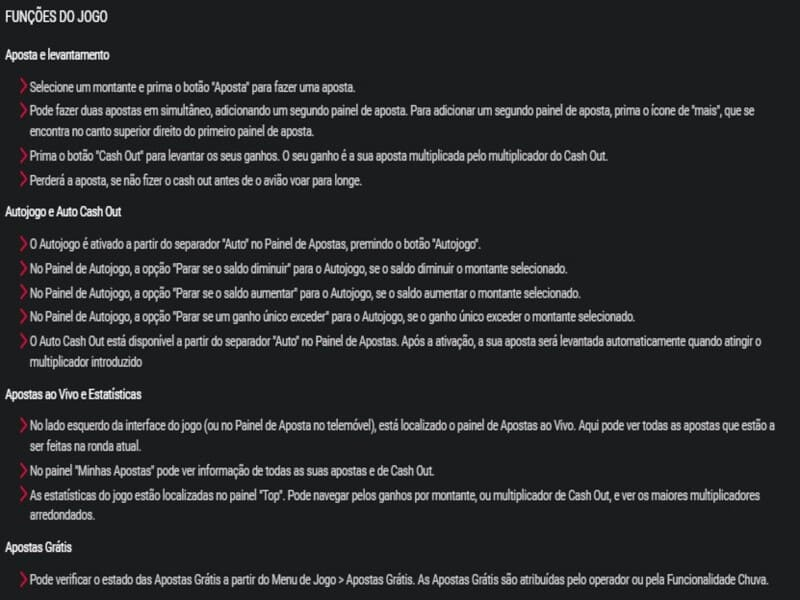Táticas de aviador

Aviator PinUp

Demonstração de Aviator
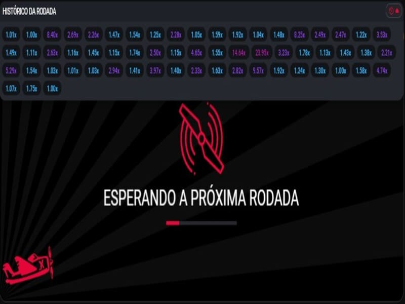Jogue Aviator gratuitamente

Baixe o aplicativo Aviator

Baixe o jogo Aviator